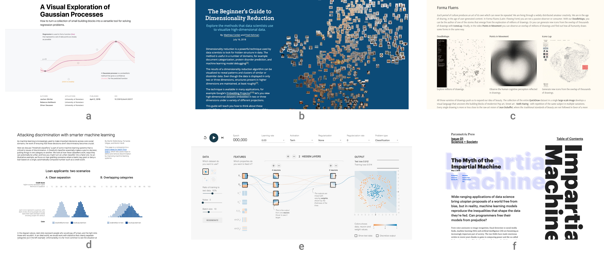

2nd Workshop on
Visualization for AI Explainability
October 20 or 21 (TBD), 2019 at IEEE VIS in Vancouver, Canada
The role of visualization in artificial intelligence (AI) gained significant attention in recent years. With the growing complexity of AI models, the critical need for understanding their inner-workings has increased. Visualization is potentially a powerful technique to fill such a critical need.
The goal of this workshop is to initiate a call for "explainables" / "explorables" that explain how AI techniques work using visualization. We believe the VIS community can leverage their expertise in creating visual narratives to bring new insight into the often obfuscated complexity of AI systems.

Important Dates
July 24, 2019, 5:00pm PDT: Blog/Notebooks + Position Paper Submission
August 2, 2019: Author Notification
September 3, 2019: Camera-ready Copy for Accepted Submissions
September XX, 2019: VIS Early Bird Registration Ends
October 20 or 21 -- Workshop in Vancouver at IEEE VIS 2019
Call for Participation
Explainables (Interactive articles, Markup, and Notebooks)
Explainable submissions are the core element of the workshop, as this workshop aims to be a platform for explanatory visualizations focusing on AI techniques.
Authors have the freedom to use whatever templates and formats they like. However, the narrative has to be visual and interactive, and walk readers through a keen understanding on the ML technique or application. Authors may wish to write a Distill-style blog post (format), interactive Idyll markup, or a Jupyter or Observable notebook that integrates code, text, and visualization to tell the story.
Here are a few examples of visual explanations of AI methods in thesetypes of formats:
- [interactive article] A Visual Exploration of Gaussian Processes
- [interactive article] Why Momentum Really Works
- [interactive article] A Visual Introduction to Machine Learning
- [interactive article] Art-Inspired Data Experiments on Neural Network Model Decay
- [interactive article] Attacking Discrimination with Smarter Machine Learning
- [markup] The Myth of the Impartial Machine
- [markup] The Beginner's Guide to Dimensionality Reduction
- [notebook] t-SNE Explained in Plain JavaScript
- [notebook] How to build a Teachable Machine with TensorFlow.js
- [notebook] Titanic Machine Learning from Disaster
While these examples are informative and excellent, we hope the Visualization & ML community will think about ways to creatively expand on such foundational work to explain AI methods using novel interactions and visualizations often present at IEEE VIS. Please contact us, if you want to submit a original work in another format. Email: orga.visxai at gmail.com.
Note: We also accept more traditional papers that accompany an explainable. Be aware that we require that the explainable must stand on its own. The reviewers will evaluate the explainable (and might chose to ignore the paper).
Last year, the best works were invited to submit their extended work to the online publishing platform distill.pub to generate a cite-able publication for authors. We will try to fast-track the publication this year as well.
Organizers (alphabetic)
Adam Perer - Carnegie Mellon University
Duen Horng (Polo) Chau - Georgia Tech
Fernanda Viégas - Google Brain
Fred Hohman - Georgia Tech
Hendrik Strobelt - MIT-IBM Watson AI Lab
Mennatallah El-Assady - University of Konstanz